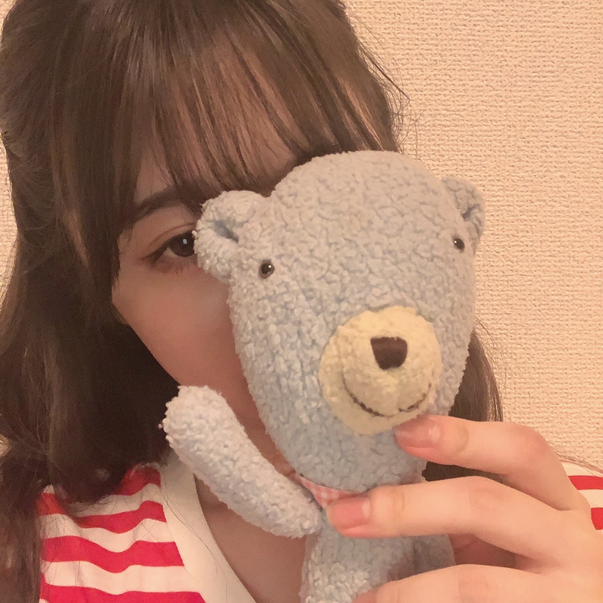
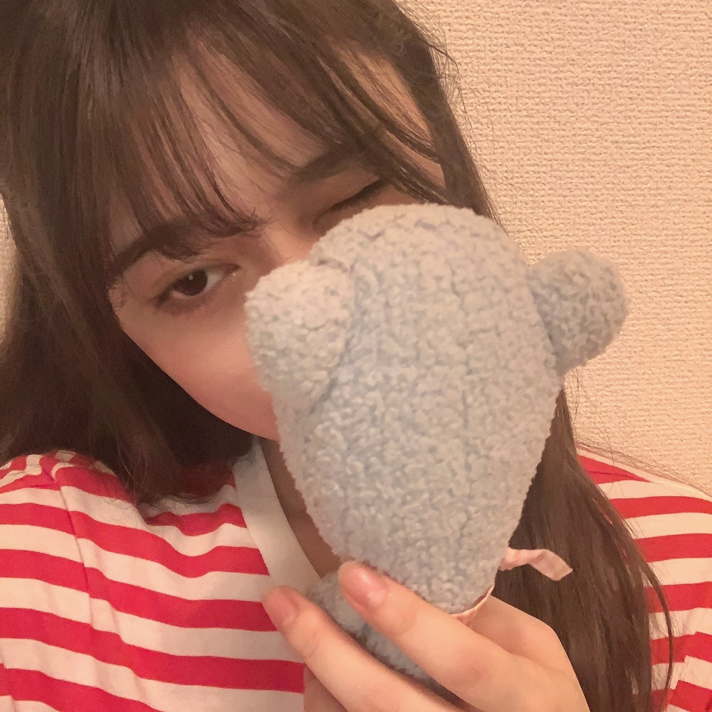
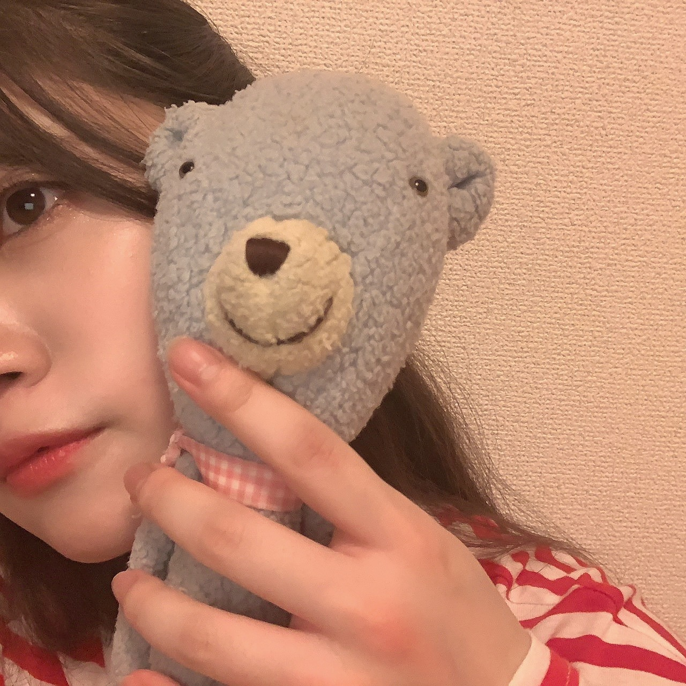
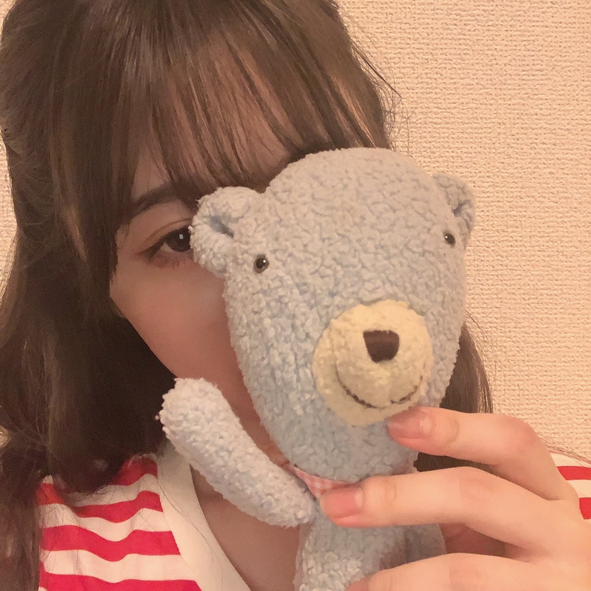
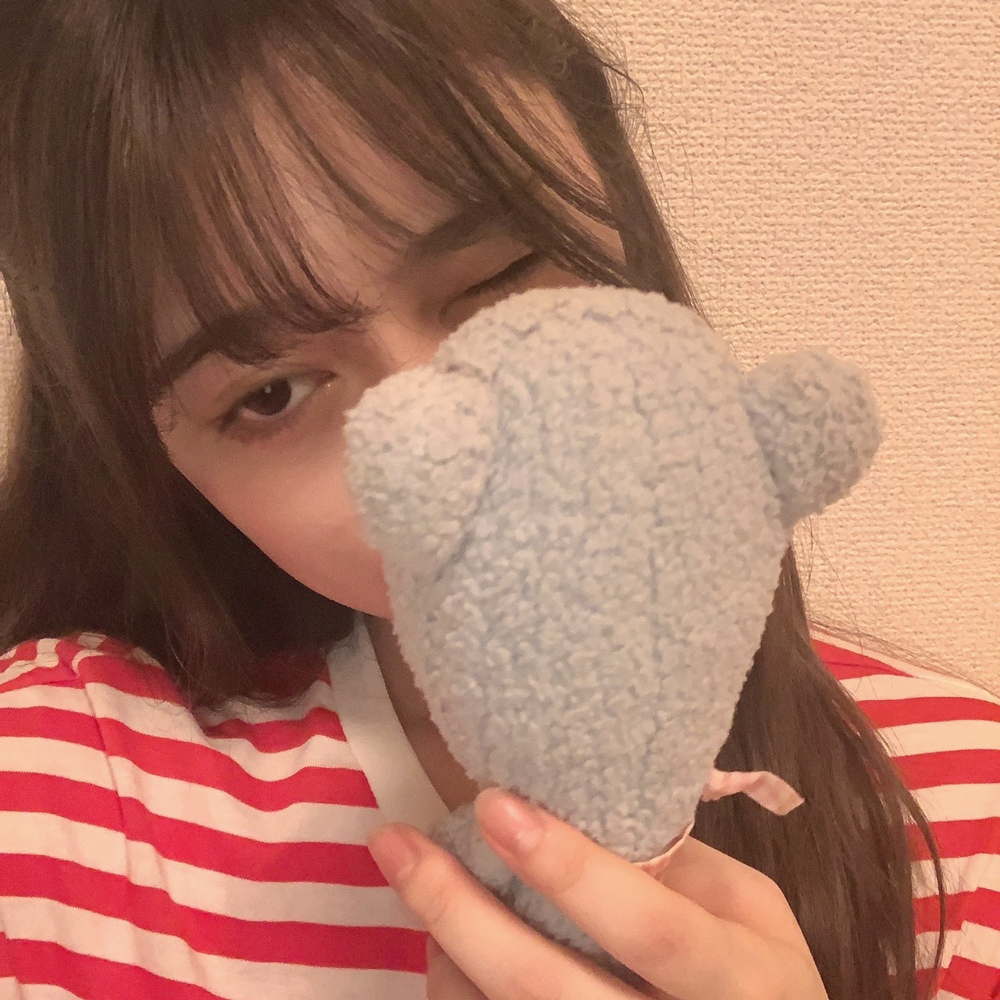
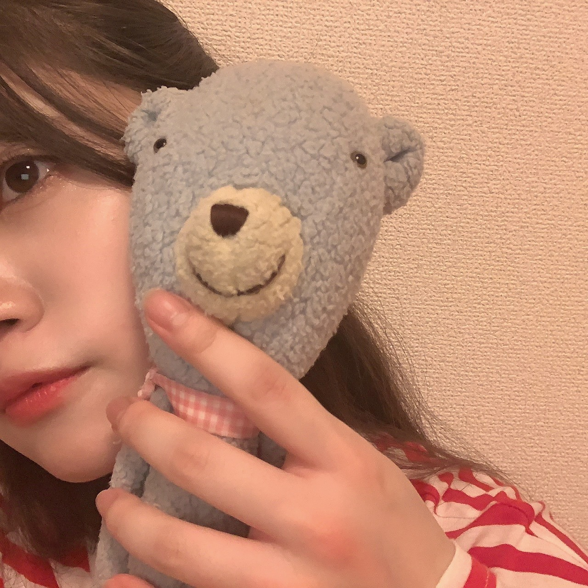

2020/0720MonYes
小さな頃から夜更しな私は
タモリ倶楽部のおしりふりふりが大好きでした。
よく踊ってました。
空耳アワードは、家族で大笑いの企画です。
あれ思いつく方の耳って凄いなーって感心してしまいます。
それと、あの映像作りが絶妙なセンスで
より、面白いんですよね！！！
大人になっても続いている番組
続いてることの素晴らしさ
とても素敵ですよね。☺️
最近は、ネットで海外の景色を調べて行った気分になるのがマイブームかもです。
楽しいですー。
行けるようになったら
ここでこんな写真撮りたいなーとか
こんな事したいなーとか想像が膨らみます！！
ネットで海外について調べてたり見ていたら
海外のファンの人にも会いたいなーと思いました。
ただでさえ会える機会が少なかった中。
早く、世界中どこでも行けるようになるといいな。
でも、この時代に逢えてよかったと思う事もありました！！！
インターネットがある時代だからこそいつも
近くに感じられますし
だからこそ、見つけてもらえたから
こんな時だからこそ
乃木坂46もネットを使って活動をしていて
日本に住むファンの皆さんとも今は
握手会やライブ直接会う機会は暫くない中ですが
こうやって、このブログでも
色んな地域からコメントがあって、、、
幸せ者だと感じました。☺️
いつも、あたたかいコメントありがとうございます。☺️
写真は46時間TVの時に連れて行っていた
ひょろひょろくんとのツーショット。
毎日一緒に寝ています。
同い年です。



また、更新しますね！！
タモリ倶楽部のおしりふりふりが大好きでした。
よく踊ってました。
空耳アワードは、家族で大笑いの企画です。
あれ思いつく方の耳って凄いなーって感心してしまいます。
それと、あの映像作りが絶妙なセンスで
より、面白いんですよね！！！
大人になっても続いている番組
続いてることの素晴らしさ
とても素敵ですよね。☺️
最近は、ネットで海外の景色を調べて行った気分になるのがマイブームかもです。
楽しいですー。
行けるようになったら
ここでこんな写真撮りたいなーとか
こんな事したいなーとか想像が膨らみます！！
ネットで海外について調べてたり見ていたら
海外のファンの人にも会いたいなーと思いました。
ただでさえ会える機会が少なかった中。
早く、世界中どこでも行けるようになるといいな。
でも、この時代に逢えてよかったと思う事もありました！！！
インターネットがある時代だからこそいつも
近くに感じられますし
だからこそ、見つけてもらえたから
こんな時だからこそ
乃木坂46もネットを使って活動をしていて
日本に住むファンの皆さんとも今は
握手会やライブ直接会う機会は暫くない中ですが
こうやって、このブログでも
色んな地域からコメントがあって、、、
幸せ者だと感じました。☺️
いつも、あたたかいコメントありがとうございます。☺️
写真は46時間TVの時に連れて行っていた
ひょろひょろくんとのツーショット。
毎日一緒に寝ています。
同い年です。



また、更新しますね！！
2020/07/20 18:42
コメント(534)
考えるだけでも幸せな気分になるよね～
(*・ｪ･*)ﾉ～☆ｺﾝﾊﾞﾝﾜ♪最愛なる蘭世
メールありがとう！
今日の晩御飯は鳥の竜田揚げとちくわの磯辺揚げやったで！
あとはわかめスープ
竜田揚げは美味しいからおすそ分けしたいな
沢山食べたい気分なんや
ピザで思いだすわ～ビーフピザ笑笑
またのぎえいごも蘭世
そうめんとかうどんははさっぱりしたゆずやすだちやレモン系の汁とかで食べたいな～今の季節
食べる事考えると幸せよな。
だからよるとかにYouTubeで料理系の動画観てしまうわ。
今日もめまいでいつ寝れるか分からないからこのコメントでおやすみを。
今日もゆっくり休んで心に安らぎをな。
また明日からも一週間笑って過ごせるようにしような
(^o^)ﾉ ＜ おやすみー蘭世
きっとまた明日も笑顔で(｡･ω･)ﾉﾞ
蘭世さん、ブログありがとう。
なかなか元の日常に戻ることが厳しい状況ですが、ブログやモバメでいつも元気をもらっています。ありがとうございます。
個人的には最近あんまり元気が出ない日が多いので、モバメとか来るとすごく嬉しくてそれだけで救われる気がしています。
これからもずっと応援しています。体調崩さないようにお身体をご自愛ください。
なかなか元の日常に戻ることが厳しい状況ですが、ブログやモバメでいつも元気をもらっています。ありがとうございます。
個人的には最近あんまり元気が出ない日が多いので、モバメとか来るとすごく嬉しくてそれだけで救われる気がしています。
これからもずっと応援しています。体調崩さないようにお身体をご自愛ください。
こんばんは！
4連休あっという間でしたね。
とまらんぜでも触れられてましたが、
世界中の隣人よ、とても素敵だったよー
髪型もめっちゃ似合ってました！
昨日は近所が隅田川花火大会の調布会場だったらしく、
音が大きくてびっくりしました 笑
早くこの状況が収まって、
次は神宮ライブで花火が見れると信じてます。
梅雨がまだ続いてますが、
体調管理に気をつけてお互いがんばろう！
疲れた時はキムチ納豆豆腐がおすすめです^ ^
また、コメントします。
オレンジ
4連休あっという間でしたね。
とまらんぜでも触れられてましたが、
世界中の隣人よ、とても素敵だったよー
髪型もめっちゃ似合ってました！
昨日は近所が隅田川花火大会の調布会場だったらしく、
音が大きくてびっくりしました 笑
早くこの状況が収まって、
次は神宮ライブで花火が見れると信じてます。
梅雨がまだ続いてますが、
体調管理に気をつけてお互いがんばろう！
疲れた時はキムチ納豆豆腐がおすすめです^ ^
また、コメントします。
オレンジ
蘭世ちゃん、お疲れ様ー。
シブヤノオト、良かった。神宮の乃木坂さんたちが見れて幸せです、雨綺麗だったね、すごいタイミングだった。
時が流れるのは早いなー、もう８月だね。
全国ツアーのない夏は、いつもの夏と違うね。
また、色々楽しみにしてます、マイペースにいきましょう！
晩ごはん、あじのなめろう食べたよ。
シブヤノオト、良かった。神宮の乃木坂さんたちが見れて幸せです、雨綺麗だったね、すごいタイミングだった。
時が流れるのは早いなー、もう８月だね。
全国ツアーのない夏は、いつもの夏と違うね。
また、色々楽しみにしてます、マイペースにいきましょう！
晩ごはん、あじのなめろう食べたよ。
蘭世ちゃん、こんばんは！NEWSがとまらんぜ、拝見しました。神宮球場は不思議、周囲は都会の日常だけど、球場内は自然的で静寂な雰囲気。別世界の空間にあるかのような、どこか神秘的。僕にとって、好きな場所です。
蘭世ちゃんこんばんは♪( ´θ｀)♪
ブログ楽しみにしてるよ！
夜はお刺身を食べたよ^_^やっぱ冷たい物食べたいんだよな お腹冷えると良くないけどね
お腹冷えると良くないけどね
もうすぐ梅雨が明けて本格的な夏が訪れるけど、夏バテしないよう暑さ対策しましょうね
ブログ楽しみにしてるよ！
夜はお刺身を食べたよ^_^やっぱ冷たい物食べたいんだよな
もうすぐ梅雨が明けて本格的な夏が訪れるけど、夏バテしないよう暑さ対策しましょうね
今日もお疲れ様
今日も相変わらず雨でしたね
晴れたからウォーキング行ったのに稲光が見え始めたなぁと思ってたら、もれなくずぶ濡れで帰ってきました…
最近天気が読めないから早く梅雨明けしないかな〜
NEWSがとまらんぜ見たよ
今年も神宮のステージに立てて良かったね〜
ファンも来年こそは行けたらいいな^ ^
少しずつとはいえお仕事も元に戻りつつあるんだね！
気を引き締めてつつ上手くやっていきましょう〜
自分は4ヶ月以上引きこもってるけどもう慣れたー
仕事も在宅だし外食もしてないし、コンビニも行って無ければATMにも行ってないw
生活が一変したけどなんとかなるもんですね笑
今日の夕飯はありあわせで作ったものばかりだー
蘭世に聞かれるならちゃんとしたもの作れば良かった…
九州名物のかしわめしに、お好み焼きに、中華風コーンスープに、海藻サラダでした
バランスが変なのと炭水化物多いけど空腹を満たせればいい事にしよう(^^)
次のブログ待ってるね〜
蘭世、こんばんは。モバメありがとう＼(^-^)／今日の夕飯は、僕はトンカツだったよ。明日からまた仕事が始まるから、たっぷりエネルギー補充です(^-^)/
ところで、蘭世は怖いドラマは平気？僕は「リモートで殺される」が、怖すぎて見れません(笑)
ところで、蘭世は怖いドラマは平気？僕は「リモートで殺される」が、怖すぎて見れません(笑)
ぜー！
こんばんは！
本日もお疲れ様です！
モバメありがとうです！
1日って早いですよね、、、
チェックしますー！！
夜ご飯は生姜焼きですね！！
お肉もピザもたくさんな物を食べたいですー！
明日も頑張りましょう！！(^-^)v
えいえいおー！！
誕生日まで残り59日！！
ぜーの勢い…
とまらんぜーーー！！！
No.627
こんばんは！
本日もお疲れ様です！
モバメありがとうです！
1日って早いですよね、、、
チェックしますー！！
夜ご飯は生姜焼きですね！！
お肉もピザもたくさんな物を食べたいですー！
明日も頑張りましょう！！(^-^)v
えいえいおー！！
誕生日まで残り59日！！
ぜーの勢い…
とまらんぜーーー！！！
No.627
モバメありがとうございます。
今日も１日お疲れ様でした！
１日が早く過ぎることは充実した１日だったって事だと思いますよ～
ニュースがとまらんぜ見ましたよ！！
ブログも待ってますねー
美月さんも誕生日おめでとうですね。
今日の夜ごはんはとうもろこしご飯でしたよー
夏らしくてとても美味しかったです！
ご飯をお話をされたので今お腹が空いてきました笑
ご飯の事を考えるだけでも幸せな気分になりますよね～
ずっと大好きですよ！！
これからも応援していきます。
今日も１日お疲れ様でした！
１日が早く過ぎることは充実した１日だったって事だと思いますよ～
ニュースがとまらんぜ見ましたよ！！
ブログも待ってますねー
美月さんも誕生日おめでとうですね。
今日の夜ごはんはとうもろこしご飯でしたよー
夏らしくてとても美味しかったです！
ご飯をお話をされたので今お腹が空いてきました笑
ご飯の事を考えるだけでも幸せな気分になりますよね～
ずっと大好きですよ！！
これからも応援していきます。
蘭世ちゃん、こんばんは〜
大切な想い詰まってる場所、
楽しい思い出も 悔しい気持ちも
覚悟を決めた日も 先輩との思い出も
私の沢山の大切な想いが詰まっている場所に
今年も戻ってこれて、すごく嬉しかったです！
ここ最近、食欲がなさすぎて辛いです…
お酒はいくらでも飲めるのに、辛すぎる…
明日からも、自分なりのペースで頑張っていきましょうね〜
えいえいおー！
新しいブログが更新されそうなので慌ててコメントします！間に合うかな？？笑
NEWSがとまらんぜいつも楽しく読ませて頂いてます！たくさんの思い出がつまった神宮球場で今年もパフォーマンスができてよかったよね〜蘭世も乃木坂メンバーもファンもみんな一斉にほっとしたと言うか素直に嬉しかったと思います
まだまだ安心できる状況ではないので蘭世がいうように手洗いや換気は率先して行うようにするね！
こんにちは!
メールありがとう!
「ニュースがとまらんぜ」読んだよ!
神宮でパフォーマンスを見れて嬉しかったです!
自分も大切な想い出が詰まっている場所です!
叶わぬ願いでしたが神宮で見たかったです!
少しずつだけどみんなお仕事が通常運転になってきましたね!
慣れ過ぎは怖いことなので気を引き締めないといけないですね!
ブログも楽しみにしてます!
今日の夜ご飯は真鯛のソテーにヴァン·ブランをかけてみました!お店みたいにいかなかったけど美味しかった!
らんぜに味見してもらいたい!
今日も一日お疲れ様!
またね(｡-ω-)
おやすみなさい
メールありがとう!
「ニュースがとまらんぜ」読んだよ!
神宮でパフォーマンスを見れて嬉しかったです!
自分も大切な想い出が詰まっている場所です!
叶わぬ願いでしたが神宮で見たかったです!
少しずつだけどみんなお仕事が通常運転になってきましたね!
慣れ過ぎは怖いことなので気を引き締めないといけないですね!
ブログも楽しみにしてます!
今日の夜ご飯は真鯛のソテーにヴァン·ブランをかけてみました!お店みたいにいかなかったけど美味しかった!
らんぜに味見してもらいたい!
今日も一日お疲れ様!
またね(｡-ω-)
おやすみなさい
蘭世ちゃん、お疲れ様！
今日も沢山のメールを送ってくれて有難う！
やることがあると1日がすぐ終わっちゃうですね。
ニュースがとまらんぜ！もちろん読みましたし、SNSで拡散もしました。
今年も違う形だけど神宮でパフォーマンスをすることが出来てよかったね！
来年はまたみんなで良い思い出を作るために今ちゃんと予防する必要がありますね(..)
蘭世ちゃんおかずを分けてくれるよりも蘭世ちゃんの好きなものを沢山作ってあげたいです:)
新しいブログの更新を楽しみにしていますよー
明日からまた新しい一週間が始まるのでお互い負けずにがんばろうね！
今日も沢山のメールを送ってくれて有難う！
やることがあると1日がすぐ終わっちゃうですね。
ニュースがとまらんぜ！もちろん読みましたし、SNSで拡散もしました。
今年も違う形だけど神宮でパフォーマンスをすることが出来てよかったね！
来年はまたみんなで良い思い出を作るために今ちゃんと予防する必要がありますね(..)
蘭世ちゃんおかずを分けてくれるよりも蘭世ちゃんの好きなものを沢山作ってあげたいです:)
新しいブログの更新を楽しみにしていますよー
明日からまた新しい一週間が始まるのでお互い負けずにがんばろうね！
蘭世さん、TV「シブヤﾉオト」で、乃木坂の聖地と言っていい神宮球場でパフォーマンスされましたね。
まだまだ昨年までのように、メンバーとファンが一体になったライブは出来ませんが、昨年までの熱いライブの様子を思い出しましたよ。
昨日の夜食はトンカツでした、良かったらお裾分けしますよ。笑
(^_^)
CRYSTALより。
まだまだ昨年までのように、メンバーとファンが一体になったライブは出来ませんが、昨年までの熱いライブの様子を思い出しましたよ。
昨日の夜食はトンカツでした、良かったらお裾分けしますよ。笑
(^_^)
CRYSTALより。
蘭世さん真夜中にこんばんは！
7/26のメールのお返事です！
〇1通目
めちゃくちゃ早く感じました…。
4連あったのですが、あっという間すぎて明日から仕事いけるかわからないです()
〇2通目
読みましたよー！
ブログの方にコメントもしましたので是非目に止まれば読んでくださーい！
ブログ楽しみにしております：）
美月さんの誕生日でしたね！
おめでたい：）
〇3通目
オムライスだったのですが、世間一般的なオムライスは上に卵があるものが多いじゃないですか？
今回僕が食べたものは卵が下に敷かれてました。笑
味は一緒でしたが、斬新でした！笑
蘭世さんいっぱい食べたい気分なんだね！
お裾分けできるのであればしたいなー！
どれもいいよね☺️
個人的にお肉は食べたら幸せになると思ってるのでいっぱい食べたい派です：）
ご飯のこと考えたら幸せになるよねー。
以上です！
4連休も終わり、明日からまた仕事です。
オンオフ切り替えるのに時間かかりそうだけど、頑張ってきます！
蘭世さんは4連休だったかはわかりませんが、また明日からも頑張っていきましょうね：）
ぐっばーい！
悠人⊿
7/26のメールのお返事です！
〇1通目
めちゃくちゃ早く感じました…。
4連あったのですが、あっという間すぎて明日から仕事いけるかわからないです()
〇2通目
読みましたよー！
ブログの方にコメントもしましたので是非目に止まれば読んでくださーい！
ブログ楽しみにしております：）
美月さんの誕生日でしたね！
おめでたい：）
〇3通目
オムライスだったのですが、世間一般的なオムライスは上に卵があるものが多いじゃないですか？
今回僕が食べたものは卵が下に敷かれてました。笑
味は一緒でしたが、斬新でした！笑
蘭世さんいっぱい食べたい気分なんだね！
お裾分けできるのであればしたいなー！
どれもいいよね☺️
個人的にお肉は食べたら幸せになると思ってるのでいっぱい食べたい派です：）
ご飯のこと考えたら幸せになるよねー。
以上です！
4連休も終わり、明日からまた仕事です。
オンオフ切り替えるのに時間かかりそうだけど、頑張ってきます！
蘭世さんは4連休だったかはわかりませんが、また明日からも頑張っていきましょうね：）
ぐっばーい！
悠人⊿
らんぜ！今日も本当にお疲れさま！
ユンです(^^)
今日も楽しめた？
ぼくは楽しめたよ！
今日も充実できたなー
そして今日もメール送ってくれて本当にありがとう！
結構遅い時間だったのにメールが来てすごく嬉しかった！
でも本当に最近は１日が早いね
めちゃめちゃ思った(笑)
もっと色んなことができると良いけど、、、
時間を大切にしてちゃんと色々やっていこうと！
そしてnewsがとまらんぜもいつも読んでるよー
毎回ありがとう！
今度は神宮でのシブヤノオトのことが主題だったね！
めちゃめちゃ良かったな
やっぱ何度めはいつ聴いても素敵な曲だし
世界中の隣人よもフルでこうやって聴けて嬉しかった！
なんか神宮でこの曲を歌うみんなを見たら
ぐっと来るものがあったな
めちゃめちゃ良かったです！
そして活動も少しずつ元に戻りつつあるけど
まだ東京の感染者は増えてるよね
このみんなの警戒が緩くなってる時だからこそ
より気をつける必要があるよね
お互い、大変だと思うけどもうちょっと頑張ろう！
そして夜ご飯はダイエット食段でした！
鳥の胸肉チャーハンと鳥の胸肉ソーセージ、そしてサラダ！
全部で500カロリーぐらいかな
でも悪くないです！
毎日これを食べてるから
最近はピザがめちゃめちゃ食べたい気分、、、
でももうちょっと我慢します！
９月からはまた好きなものをたくさん食べたい！
では、今日はこの辺で。
またね！！
ユン
ユンです(^^)
今日も楽しめた？
ぼくは楽しめたよ！
今日も充実できたなー
そして今日もメール送ってくれて本当にありがとう！
結構遅い時間だったのにメールが来てすごく嬉しかった！
でも本当に最近は１日が早いね
めちゃめちゃ思った(笑)
もっと色んなことができると良いけど、、、
時間を大切にしてちゃんと色々やっていこうと！
そしてnewsがとまらんぜもいつも読んでるよー
毎回ありがとう！
今度は神宮でのシブヤノオトのことが主題だったね！
めちゃめちゃ良かったな
やっぱ何度めはいつ聴いても素敵な曲だし
世界中の隣人よもフルでこうやって聴けて嬉しかった！
なんか神宮でこの曲を歌うみんなを見たら
ぐっと来るものがあったな
めちゃめちゃ良かったです！
そして活動も少しずつ元に戻りつつあるけど
まだ東京の感染者は増えてるよね
このみんなの警戒が緩くなってる時だからこそ
より気をつける必要があるよね
お互い、大変だと思うけどもうちょっと頑張ろう！
そして夜ご飯はダイエット食段でした！
鳥の胸肉チャーハンと鳥の胸肉ソーセージ、そしてサラダ！
全部で500カロリーぐらいかな
でも悪くないです！
毎日これを食べてるから
最近はピザがめちゃめちゃ食べたい気分、、、
でももうちょっと我慢します！
９月からはまた好きなものをたくさん食べたい！
では、今日はこの辺で。
またね！！
ユン
蘭世ちゃん、こんばんは♪
お疲れ様です。
おひさしぶりになってしまいました ><
モバメやブログいつもありがとうー
後でまた書くねと言いながら全然コメント書けてない自分だめだめやと思って、最近のことだけでも一言二言でも返したいなーと思って。
蘭世ちゃんにおかず分けたいなー、一緒にご飯食べたらより美味しく感じるだろうなーとか思いながら、夜ご飯食べてました。
今日の夜ご飯はかなり手抜きで、天然生本マグロの中トロ、かつお、タコをお刺身で（全部切っただけ笑）と、もずく酢とミニトマト、それにお寿司食べたよ:)
刺身大好きなのです。
この時期はホヤの刺身とかもよく食べるなー
ほんとは長芋サラダも作るつもりだったのですが、それすら面倒くさくなっちゃった笑
パスタとか、そうめんやうどんはお昼に食べることが多いです。
こないだは買い置きで冷凍してたなめことか使って肉うどん（？）とかしました。
ピザも大好き！
会社の仲良い先輩とピザ会（といっても会員3名だけど、、）というのを何年も前に作って時々集まったりしてます。
特にアメリカンなピザが好きです。
肉も大好き！
こないだひさしぶりに焼き肉としゃぶしゃぶ食べました。
しゃぶしゃぶはパクチー大量投下しました笑
昔はしゃぶしゃぶ屋さんでパクチーなんてなかったよねー
パクチーも大好き！私ほぼ好き嫌いないのです笑
蘭世ちゃんは夜ご飯何食べたのー？
モバメの写真、髪型かわいいようー;-)
このブログの写真の4枚目特に好き！
蘭世ちゃん見切れてるけど笑
見切れててもかわいさが溢れてる！
空耳アワーおもしろいよね。
昔から仕事から帰ってきてあー疲れたーってなりながら、夜ご飯とおビール飲みながら、いつも空耳見てケラケラ笑ってました。
今お休み中だからちょっと残念。。
今日は蒸し暑かったね。
私はエアコンは冷房も暖房もめったに使わないので今年もまだ冷房は1回も使ってないんやけど、ちょっと前まで結構肌寒かったから、ちょっと温度差がこたえるね。
お天気も雨の日が長く続いてるし、異常な大雨とか、なんか地球環境おかしいのが気になりますね。。
蘭世ちゃんも体に気をつけてね。
らんらん大好きー
またねー
お疲れ様です。
おひさしぶりになってしまいました ><
モバメやブログいつもありがとうー
後でまた書くねと言いながら全然コメント書けてない自分だめだめやと思って、最近のことだけでも一言二言でも返したいなーと思って。
蘭世ちゃんにおかず分けたいなー、一緒にご飯食べたらより美味しく感じるだろうなーとか思いながら、夜ご飯食べてました。
今日の夜ご飯はかなり手抜きで、天然生本マグロの中トロ、かつお、タコをお刺身で（全部切っただけ笑）と、もずく酢とミニトマト、それにお寿司食べたよ:)
刺身大好きなのです。
この時期はホヤの刺身とかもよく食べるなー
ほんとは長芋サラダも作るつもりだったのですが、それすら面倒くさくなっちゃった笑
パスタとか、そうめんやうどんはお昼に食べることが多いです。
こないだは買い置きで冷凍してたなめことか使って肉うどん（？）とかしました。
ピザも大好き！
会社の仲良い先輩とピザ会（といっても会員3名だけど、、）というのを何年も前に作って時々集まったりしてます。
特にアメリカンなピザが好きです。
肉も大好き！
こないだひさしぶりに焼き肉としゃぶしゃぶ食べました。
しゃぶしゃぶはパクチー大量投下しました笑
昔はしゃぶしゃぶ屋さんでパクチーなんてなかったよねー
パクチーも大好き！私ほぼ好き嫌いないのです笑
蘭世ちゃんは夜ご飯何食べたのー？
モバメの写真、髪型かわいいようー;-)
このブログの写真の4枚目特に好き！
蘭世ちゃん見切れてるけど笑
見切れててもかわいさが溢れてる！
空耳アワーおもしろいよね。
昔から仕事から帰ってきてあー疲れたーってなりながら、夜ご飯とおビール飲みながら、いつも空耳見てケラケラ笑ってました。
今お休み中だからちょっと残念。。
今日は蒸し暑かったね。
私はエアコンは冷房も暖房もめったに使わないので今年もまだ冷房は1回も使ってないんやけど、ちょっと前まで結構肌寒かったから、ちょっと温度差がこたえるね。
お天気も雨の日が長く続いてるし、異常な大雨とか、なんか地球環境おかしいのが気になりますね。。
蘭世ちゃんも体に気をつけてね。
らんらん大好きー
またねー
蘭世〜おはようー
モバメありがとう〜
夕食は鶏レバーの味噌煮、豆腐の味噌汁、冷奴、納豆だったよー。健康的な食生活
ブログの更新も楽しみにしてるね☺️
蘭世は良き週末を過ごせたかな？
今週も1週間よろしくねー！
蘭世にとって良き良き1週間であります様に〜
モバメありがとう〜
夕食は鶏レバーの味噌煮、豆腐の味噌汁、冷奴、納豆だったよー。健康的な食生活
ブログの更新も楽しみにしてるね☺️
蘭世は良き週末を過ごせたかな？
今週も1週間よろしくねー！
蘭世にとって良き良き1週間であります様に〜
おはよう
今日も蘭世
昨日はよく寝れた。
でもちょっとまだめまいの感じが残ってるな…
いつまた来るかわからんから少し不安。
でも、蘭世
めまいで何が辛いってもちろん症状が出るのが一番やけど、周りが理解を示しずらいってとこなんよな。
見た目は普段と変わらないからな…
それで昔から物凄く周りとはもめてたわ…
それにやっぱ分かってもらえんってとこですごくイラつきももしたからな…でも蘭世
ホンマ出逢ってくれて有り難うやわ。
今日も頑張れる。
ブログ楽しみにしとるからな
それじゃ今日もお互いに笑って過ごせる日にしような
今日も出会う方々や頂けるお仕事に感謝して初心を忘れずに楽しんで笑顔で居られる日にしよう。
産んで育ててくれた御両親にも常に感謝を…
じゃきっとまた後で(´▽｀)
いってらっしゃい！
モバメ♡ありがとうございます(ｏдｏlll)
やっほっす～(o^∀^)
抹茶どら焼きをあむあむあむ[壁]ｴ＿)
前髪師匠ぱっつん寺田蘭世さまきゃわわうれぴーぽーo(￣◎￣)o ﾊﾞﾌﾞｩ♡
ほんじつも光太刀魚パワー100万馬力でばいころまる( ;-(ｴ)-)ゞｸﾏｯﾀ
やっほっす～(o^∀^)
抹茶どら焼きをあむあむあむ[壁]ｴ＿)
前髪師匠ぱっつん寺田蘭世さまきゃわわうれぴーぽーo(￣◎￣)o ﾊﾞﾌﾞｩ♡
ほんじつも光太刀魚パワー100万馬力でばいころまる( ;-(ｴ)-)ゞｸﾏｯﾀ
おはようございますらんぜ！
月曜の午前中は眠いですね、、、午後も眠いですけど、、、
昨日はメール！ありがとう(^^)！
らんぜは晩ごはんなんだったのかな〜。
おかずをわけてあげたかったよ〜！サラダをね、えいっ！っておくりたかったなー(^^)b
らんぜが食欲をちょっと取り戻したみたいで、良かった(^^) でもホントむし暑くて、バテちゃうね^^; オニクもいいね！ハンバーグたべたいな！らんぜはやっぱりやきにくかな♪
今日も、らんぜに想いを送っていっぱいいっぱい、応援してますからね。んー！なんか元気出てきたよ(^^)bらんぜのこと考えるとゲンキ出るね！
らんぜがすこやかに、1日を過ごせますように。
おこころもおからだも大事にして、いてくださいねらんぜ(^^)
また書きますね(^^)/
月曜の午前中は眠いですね、、、午後も眠いですけど、、、
昨日はメール！ありがとう(^^)！
らんぜは晩ごはんなんだったのかな〜。
おかずをわけてあげたかったよ〜！サラダをね、えいっ！っておくりたかったなー(^^)b
らんぜが食欲をちょっと取り戻したみたいで、良かった(^^) でもホントむし暑くて、バテちゃうね^^; オニクもいいね！ハンバーグたべたいな！らんぜはやっぱりやきにくかな♪
今日も、らんぜに想いを送っていっぱいいっぱい、応援してますからね。んー！なんか元気出てきたよ(^^)bらんぜのこと考えるとゲンキ出るね！
らんぜがすこやかに、1日を過ごせますように。
おこころもおからだも大事にして、いてくださいねらんぜ(^^)
また書きますね(^^)/
蘭世おはよ！
今日も暑くなりますなー気をつけながら一日過ごしましょ( ˊᵕˋ* )♩
お互い素敵な一日となりますように、
ではまたきっと(´ｰ∀ｰ`)ฅ
ゆうたーん より


今日も暑くなりますなー気をつけながら一日過ごしましょ( ˊᵕˋ* )♩
お互い素敵な一日となりますように、
ではまたきっと(´ｰ∀ｰ`)ฅ
ゆうたーん より
やぁ
メ―ルありがとう！
こんにちは！の時間やな！
お昼ご飯は何かな～～？
左手かな？
どうですかね？ときたか笑
独創的でいい写真
真面目にひょろひょろくんに嫉妬嫉妬
俺も蘭世
次の日ひょろひょろくんお留守番やったな
せやな蘭世
きっとまた後で(｡･ω･)ﾉﾞ
蘭世こんにちは❗
僕は最近うなぎをよく食べてるよ(^^)
土用の丑の日はもう過ぎてしまったけど…
蘭世はこういう時節柄のものとか縁起物とかは気にするほうかな？
蘭世のお手手のどアップ良きー(^^)
なかなかこういうのないしね(笑)
蘭世、ひょろひょろくんとはたとえおばあちゃんになっても仲良しでいてね☺️
僕は最近うなぎをよく食べてるよ(^^)
土用の丑の日はもう過ぎてしまったけど…
蘭世はこういう時節柄のものとか縁起物とかは気にするほうかな？
蘭世のお手手のどアップ良きー(^^)
なかなかこういうのないしね(笑)
蘭世、ひょろひょろくんとはたとえおばあちゃんになっても仲良しでいてね☺️
蘭世ちゃんこんにちは♪( ´θ｀)♪
ひょろひょろ君は良き理解者なんだね
あー、ひょろひょろ君になりたいです（ ; ; ）
ひょろひょろ君は良き理解者なんだね
あー、ひょろひょろ君になりたいです（ ; ; ）
こんにちはらんぜ(^^)
おつかれさまです♪
こんにちはの時間ですね！
メールありがとう(^^)！
らんぜのてだっ！
良うございますよ(^^)b
よいけっしょくのおててでございます♪
らんぜの手のお写真に向かって、手を振ってみました(^^)/ はろはろ〜♪
らんぜとひょろひょろくん、大好きすぎる〜っ！！らんぜとひょろひょろくんは最強最愛のコンビですね(^^)d
46時間テレビのときもらんぜを応援しにお出かけしたもんね、ひょろひょろくん。ひょこっと座ってらんぜを見守ってる姿を想像すると、ほっこりと、なごやか〜な気持ちになるなぁ(^^)♪
そしてそのひょろひょろくんを抱えてるらんぜがとっても綺麗です！！前髪、サイドもとっても素敵です(^^) 髪色もきれい♪写真の色味もこれとっても好きだなぁ。赤と白のボーダー、らんぜによくお似合いです(^^) このお写真の色味、らんぜの瞳、髪色、眉色、相性良いですね〜！ホント好きな色味♪
ひょろひょろくんのスカーフもとってもカワイイですね(^^)bらんぜと一緒でひょろひょろくんも、おしゃれさんです(^^)！
ひょろひょろくん、午後からもらんぜのことしっかりと見守っていてくださいね。
ふたりがなかよく過ごしてるところを想像しながら、ほかほかな気持ちで私も過ごしますから♪
ではらんぜ、ごきげんよう！
また書きますね(^^)/
ひょろひょろくんにも宜しくお伝えください！
おつかれさまです♪
こんにちはの時間ですね！
メールありがとう(^^)！
らんぜのてだっ！
良うございますよ(^^)b
よいけっしょくのおててでございます♪
らんぜの手のお写真に向かって、手を振ってみました(^^)/ はろはろ〜♪
らんぜとひょろひょろくん、大好きすぎる〜っ！！らんぜとひょろひょろくんは最強最愛のコンビですね(^^)d
46時間テレビのときもらんぜを応援しにお出かけしたもんね、ひょろひょろくん。ひょこっと座ってらんぜを見守ってる姿を想像すると、ほっこりと、なごやか〜な気持ちになるなぁ(^^)♪
そしてそのひょろひょろくんを抱えてるらんぜがとっても綺麗です！！前髪、サイドもとっても素敵です(^^) 髪色もきれい♪写真の色味もこれとっても好きだなぁ。赤と白のボーダー、らんぜによくお似合いです(^^) このお写真の色味、らんぜの瞳、髪色、眉色、相性良いですね〜！ホント好きな色味♪
ひょろひょろくんのスカーフもとってもカワイイですね(^^)bらんぜと一緒でひょろひょろくんも、おしゃれさんです(^^)！
ひょろひょろくん、午後からもらんぜのことしっかりと見守っていてくださいね。
ふたりがなかよく過ごしてるところを想像しながら、ほかほかな気持ちで私も過ごしますから♪
ではらんぜ、ごきげんよう！
また書きますね(^^)/
ひょろひょろくんにも宜しくお伝えください！
こんちは
手近すぎー^ ^
親指、人差し指、中指かな？
ひょろひょろくんの登場率が最近高いね〜
ひょろひょろくんには色々支えてもらってるんだろうな
もうここまできたら一生一緒にいないとね！
メールありがとう☺︎
こんにちは！
蘭世ちゃんはお昼ご飯何食べた？
私はお蕎麦に納豆×キムチをトッピングして食べました〜美味！
手！！！ドアップでびっくりしました！笑
ひょろひょろくんとの写真、可愛いです♡♡♡
蘭世ちゃんとひょろひょろは一心同体やね！
これからもずっと一緒なんやろな〜
さっきカノ嘘観終わりました！韓ドラの！
絶賛韓ドラハマり中です。
蘭世ちゃんは韓国語喋れるけど、韓ドラ観たりはしないのかな？
もしオススメあったら教えてほしいです！！
それでは！今からレポート頑張ってきます！
蘭世ちゃんも午後から頑張ってね☺️
こんにちは！
蘭世ちゃんはお昼ご飯何食べた？
私はお蕎麦に納豆×キムチをトッピングして食べました〜美味！
手！！！ドアップでびっくりしました！笑
ひょろひょろくんとの写真、可愛いです♡♡♡
蘭世ちゃんとひょろひょろは一心同体やね！
これからもずっと一緒なんやろな〜
さっきカノ嘘観終わりました！韓ドラの！
絶賛韓ドラハマり中です。
蘭世ちゃんは韓国語喋れるけど、韓ドラ観たりはしないのかな？
もしオススメあったら教えてほしいです！！
それでは！今からレポート頑張ってきます！
蘭世ちゃんも午後から頑張ってね☺️
美しい手です！
やぁ(｡･ω･)ﾉﾞ最愛なる蘭世
メ―ルありがとう！
アナスターシャに滑走路良いよな～俺も毎朝のルーティーンとして聴いてるし、鬼リピ曲やで！
早くコロナが落ち着いて逢える日が来るとええな
きっとまた後で(｡･ω･)ﾉﾞ
こんにちはらんぜ(^^)
おつかれさまです！！
メール、ありがとう(^^)b
さっそく、その2曲をあの後ききましたよ♪
そして、プレイリストで連続させるようにしました(^^)
らんぜのプレイリスト上位2曲を知れて嬉しい！！
佐々木さんに、会えるといいね。
らんぜと佐々木さん、今だったら、会ったらどんな話に展開するんだろ、、、案外むかしと変わらないのかな？
久しぶりにらんぜと佐々木さんが一緒のとこ、想像したな(^^)
いつかのラジオみたいにまた、ふたりのお話聴きたいなあ。あのときのまだ全然物足りなかったよ！もっともっとふたりのフリートークを聴いてみたい。
そんな機会があればいいな！
らんぜ、またまた素敵なメールありがとうございます(^^)d
また書きますね(^^)/
おつかれさまです！！
メール、ありがとう(^^)b
さっそく、その2曲をあの後ききましたよ♪
そして、プレイリストで連続させるようにしました(^^)
らんぜのプレイリスト上位2曲を知れて嬉しい！！
佐々木さんに、会えるといいね。
らんぜと佐々木さん、今だったら、会ったらどんな話に展開するんだろ、、、案外むかしと変わらないのかな？
久しぶりにらんぜと佐々木さんが一緒のとこ、想像したな(^^)
いつかのラジオみたいにまた、ふたりのお話聴きたいなあ。あのときのまだ全然物足りなかったよ！もっともっとふたりのフリートークを聴いてみたい。
そんな機会があればいいな！
らんぜ、またまた素敵なメールありがとうございます(^^)d
また書きますね(^^)/


メールありがとうね〜！
元気してますかー？( .. )
今日の夜ご飯はお刺身食べましたー！
らんぜさんは何食べたかなー？
たまにはおうちごはんのお写真も見れたら良きですー！
いつもありがとうね！
また遊びに来ますねー！(^^)